VALORANT Patch Notes 12.05

НА ВСЕ ПЛАТФОРМЫ
ОБЩИЕ ОБНОВЛЕНИЯ
Для 12.05 мы сосредоточимся на поддержке скоординированной командной игры и увеличении разнообразия выбора персонажей во всех аспектах. Хотя мы считаем, что индивидуальные навыки особенно важны при стрельбе и выполнении задач, мы все же считаем, что стратегия лучше всего разрабатывается в команде, и использование агентов для совместной работы.
Поэтому обновления агентов, представленные ниже, направлены на то, чтобы немного уменьшить силу нескольких агентов, которые слишком эгоистичны и сильны в одиночку (например, Клов и Йору). Кроме того, мы добавляем Микса в состав, который является практически идеальным «крылатым» для своей команды. Ну, разве что, крылатым.
Мы также вносим некоторые улучшения в интерфейс для отображения информации о убийствах, чтобы лучше показывать возможности помощи и агентов, участвующих в убийствах, добавляем значки помощи в нижней части экрана, чтобы вы могли легче определить, когда вы успешно помогли в убийстве, и улучшаем таргетинг союзников для таких способностей, как «Исцеляющий шар» Садж и «Гармонизация» Микса. Все это делается для того, чтобы отмечать и поощрять хорошие примеры командной игры.
ОБНОВЛЕНИЯ АГЕНТОВ
Прямо из Хорватии, Микс выходит на сцену, используя чистую звуковую энергию. Благодаря своей заразительной страсти и звуковым способностям, он мобилизует свою команду, чтобы действовать как единое целое, устанавливая темп на поле боя. Наш новый контроллер начнет появляться во всех регионах в 10:00 утра по тихоокеанскому времени 18 марта.
- Микс
- Способности:
- Harmonize
- ЭКИПИРУЙ Harmonize. Цель на союзника и используй FIRE для активации Combat Stim для себя и союзника, который обновляется с каждым убийством. ALT-FIRE для получения Combat Stim для себя.
- M-pulse
- ЭКИПИРУЙ M-pulse. ALT-FIRE для переключения между режимами Concuss и Healing. FIRE для бросания устройства. При приземлении, M-pulse отправляет звуковые волны, либо оглушающие, либо исцеляющие игроков.
- Waveform
- ЭКИПИРУЙ Map Targeter. FIRE для установки местоположения. ALT-FIRE для создания дыма в выбранных местах.
- Bassquake
- ЭКИПИРУЙ Bassquake. FIRE для накопления и выпуска Sonic Radiance вперед, отбрасывая, оглушая и замедляя игроков.
- Вы также можете узнать больше о Миксе на его странице агента, а также о его игровом трейлере и Dev Diary на нашем YouTube канале.
- Sage
-
Healing Orb — Цель на союзника
- С выпуском Микса, мы обновили наш интерфейс/UX для цели на союзников и внедрили эти обновления в Sage. Вы увидите новый виджет над головой цели, а также дополнительное выделение модели агента.
ДО
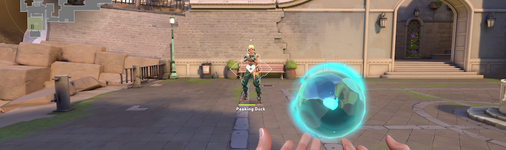
ПОСЛЕ
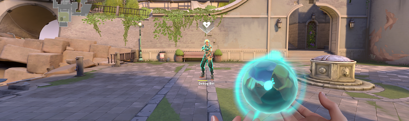
+ Обновление модели «Кристал»
— Мы добавили кристаллы в модель «Садж» и ключевые изображения, чтобы показать цену, которую она платит за
постоянное превышение пределов своих возможностей.
После изменения параметров перезарядки «Guiding’s Light» в конце прошлого года, мы начали переоценивать удаление
«Guiding’s Light». В 45 секундах, использование этой способности в начале раунда для разведки не имело серьезных последствий — и мы хотели, чтобы она была более осознанной и целенаправленной в использовании. В 60 секундах, этот компромисс стал гораздо более выраженным.
Йору вытесняет возможности использования «flash Initiators» и даже «Sentinels», особенно на более высоких рангах и в профессиональной игре. У него самая сильная способность перемещения по карте, он отлично занимает позицию, и у него одна из самых сильных способностей «flash» в игре. В целом, мы считаем, что Йору слишком силен и начинает проникать в другие роли, что снижает разнообразие команд. Поэтому мы корректируем его самые сильные способности, «Gatecrash» и «Blindside», чтобы Йору приходилось делать более значительные компромиссы, когда он их использует.
- Йору
- Gatecrash
- Продолжительность активации маяка уменьшена с 30 секунд >> 15 секунд
- Blindside
- Количество зарядов уменьшено с 2 >> 1.
Слов – это всегда популярный выбор в рейтинговых играх, и у него также гораздо более высокий процент побед, чем у других агентов.
Наша надежда заключается в том, что благодаря некоторым изменениям в его способностях и добавлению Микса, появится больше возможностей в категории контроллеров.
Эти изменения специально направлены на усиление способности Слова помогать своей команде побеждать, даже после смерти.
- Слов
- Рьюс
- Продолжительность дыма 14с >> 6с (при использовании, когда игрок мертв)
- Меддел
- Радиус действия уменьшен с 6м >> 4м
- Брейч
ОБНОВЛЕНИЯ ИГРОВЫХ МЕХАНИК
- Баннеры помощи
-
Помощь всегда была важной частью победы в раундах, но она никогда не получала заслуженного признания. Теперь это изменится!
- Когда ваша утилита или урон способствуют убийству союзника, вы увидите баннер помощи в нижней части экрана
- Баннер показывает ваш конкретный вклад в убийство и сопровождается звуковым сигналом
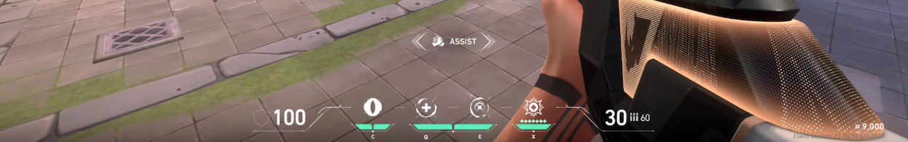
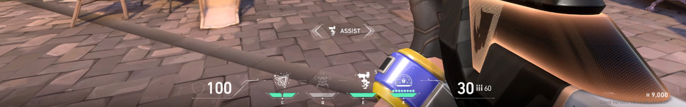
-
Обновления ленты убийств
- Ваша команда теперь видит иконку агента, который оказал помощь, и способность или урон, которые привели к убийству, в ленте убийств
- Эта информация видна только вашей команде
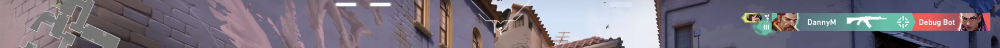
- Метки эффектов
-
Мы обновили способ и место отображения эффектов статуса на вашем HUD, чтобы улучшить ясность и последовательность. Когда
несколько эффектов активны, вы можете быстро увидеть, что влияет на вас, и как долго они действуют в
предсказуемых областях экрана, с бонусами слева и дебафами справа для более чистого
организования во время боя.ДО
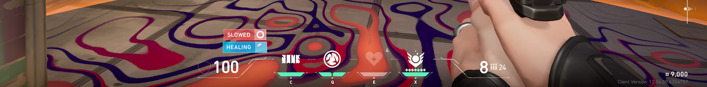
ПОСЛЕ
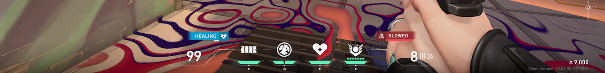
* Наблюдатели и зрители теперь могут видеть цели Ability Map, такие как Ruse от Clove, Sky Smoke от Brim, Guided Salvo от Tejo и т.д. Цели Ability Map также будут отображаться в повторах.
ОБНОВЛЕНИЯ КАРТ
- Обновления пула карт
- LOTUS и FRACTURE находятся в очередях Competitive и Deathmatch.
- ABYSS и CORRODE больше не находятся в очередях Competitive и Deathmatch.
В целом, мы довольны тем, где находится Lotus в пуле карт. Но в рамках наших усилий по всем картам, чтобы уменьшить спам оружия, когда появляются барьеры, мы изменили некоторые стены на стороне A карты. Мы также наблюдаем постоянное использование способностей в узком месте A-лобби, когда появляются барьеры. Мы не хотим полностью это остановить, но считаем, что перемещение прыжка на лианы даст атакующим лучшую возможность сражаться за руины.
- Лотус
-
Стена в лобби, где находятся атакующие, усилена, чтобы предотвратить проникновение через стену.
ДО
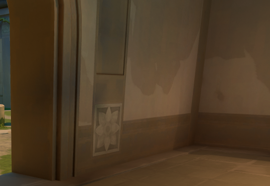
ПОСЛЕ
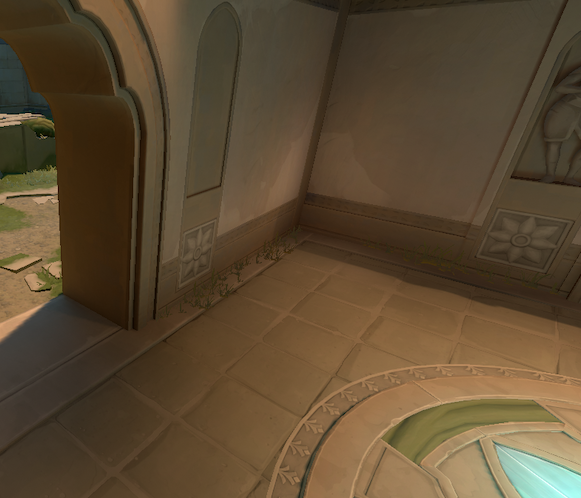
+ Перемещение «Vines» вверх, чтобы помочь атакующим выбраться из лобби и избежать использования «utility».ДО
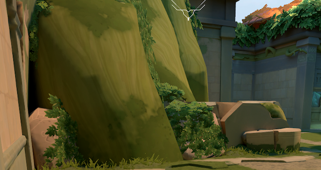
ПОСЛЕ
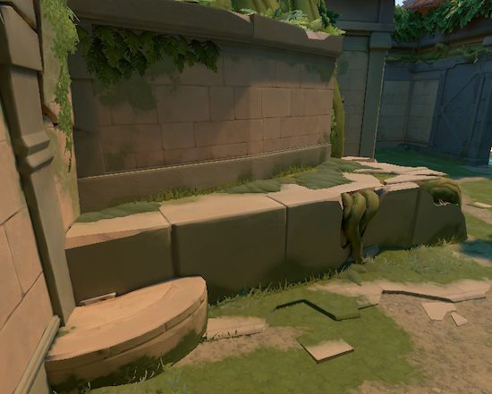
+ Усиление стены за комнатой «Tree room» для предотвращения проникновения.ДО
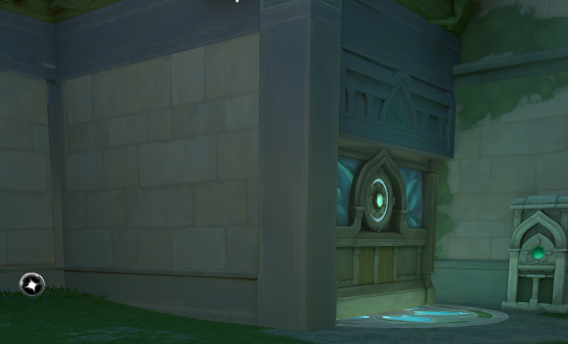
ПОСЛЕ
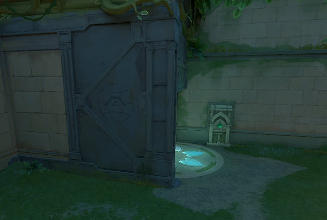
+ Добавление дополнительной комнаты снаружи лестницы «A-site», чтобы помочь удерживать «A-site» и позволить защитникам играть дальше от
обломков.ДО
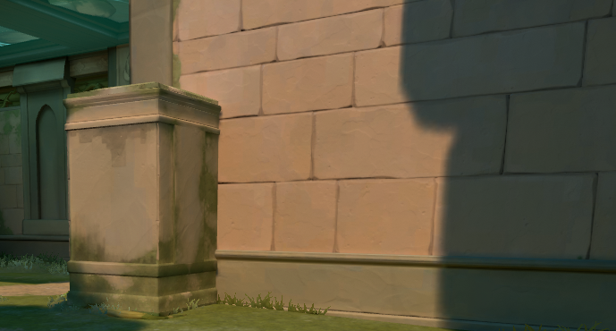
ПОСЛЕ
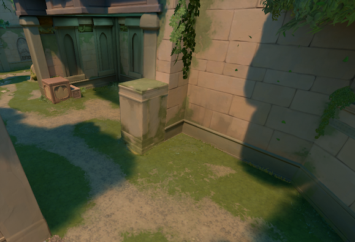
+ Зона для посадок на A-сайте изменилась, поэтому вы больше не можете сажать растения, которые ломаются/связаны
**ДО**

**ПОСЛЕ**

ОБНОВЛЕНИЯ РУТ
- Новый режим с ограниченным временем
- Представляем Knockout, режим тактической элиминации на основе раундов, где каждый убийство
возвращает в бой павшего товарища. Команды занимают позицию на центральной линии и координируют наступление в вражескую территорию, используя
уровни оружия, чтобы уничтожать друг друга. Оставайтесь в команде, меняйте роли друг с другом и
используйте импульс, пока ваша группа восстанавливается после каждого убийства.- Детали режима
- Система возрождения
- Убийство противника возвращает в бой павшего товарища
- Задержка возрождения зависит от длительности раунда, от почти мгновенной в начале раунда до нескольких секунд
- Территории команд
- Барьер на центральной линии разделяет карту на территории команд
- Захват сфер для перемещения линии в сторону противника, расширяя свою территорию и
сжимая их - Сферы также исцеляют вас и дают возможность использовать Ultimate
- Переход в вражескую территорию накладывает дебафф, заставляя наступающую команду координировать свои действия
- Уведомление «Обнаружена угроза» предупреждает вражескую команду, когда игрок
переходит в вашу территорию - Переход в вражескую территорию также скрывает вашу мини-карту, снижая вашу способность отслеживать вражеские позиции, находясь на их территории
- Наборы оружия
- Отсутствует экономика — выбирайте свой набор оружия в каждом раунде
- Предлагаемые виды оружия становятся более мощными по мере развития матча
- Структура раунда
- 5v5 на картах TDM
- Раунды длительностью 3 минуты
- Отсутствуют перезагрузки и исцеление во время овертайма, а также урон во времени заставляет
провести финальную битву - Уничтожьте всех противников, чтобы выиграть раунд
- Первая команда, набравшая 4 раунда, выигрывает матч
- Агенты и способности
- Стандартный выбор агентов с коэффициентами перезарядки способностей TDM
- Получите свой Ultimate, убивая противников или захватывая сферы
- Заряд Ultimate сбрасывается при смерти и в начале каждого раунда
- Продолжительность матча
- Выход из режимов с ограниченным временем
Все Random One Site и Skirmish: 2v2 завершены. Спасибо за игру!
УСТАНОВКА И ПРАВКИ
- Агенты
- Исправлена ошибка, при которой плавающая винтовка может временно появляться, когда эффект подавления прерывает Thrash Гекко, Owl Drone Совы или Astral Form Астры.
- Исправлена ошибка, при которой Interceptor Вето обнаруживает скрытую Spycam Сайфера.
- Исправлена ошибка, при которой реликвия Харбора не светилась при использовании Storm Surge в режиме «Левая рука».
- Исправлена ошибка, при которой взятие оружия мёртвого игрока автоматически его выдаёт при воскрешении.
- Исправлена ошибка, при которой поза использования Sky Smoke Бримстона отображала нежелательные VFX при удалённом просмотре.
- Исправлена ошибка, при которой Barrier Mesh Дедлока можно было использовать для парения, полностью блокируя тросы на точке появления атакующей команды на Fracture.
- Общие
- Исправлено несколько проблем с локализацией на экране «Счёт в конце игры (EOG)».
- Исправлена проблема, при которой последняя игра друга не всегда обновлялась в разделе «Карьера».
- Исправлена проблема, при которой полоса прогресса могла перекрывать верхние вкладки в разделе «Прогресс EOG».
- Исправлена проблема, при которой выделение фокуса могло быть задерживаться на экране «Временная шкала EOG».
ТОЛЬКО ДЛЯ ПК
ПЕРЕОБРАЗОВКИ
- Добро пожаловать на Stage V26A2! Матчи начнутся 18 марта.
- Этот Stage продлится шесть недель матчей вместо обычных семи.
- Команды с Premier Score не менее 500 квалифицируются для Playoffs 26 апреля.
- В Contender и Invite квалификация все еще основана на вашем месте — ознакомьтесь со
страницей рейтингов для получения дополнительной информации
- В Contender и Invite квалификация все еще основана на вашем месте — ознакомьтесь со
- Ваш центр наград временно покажет, что вы не получили никаких наград. Это будет исправлено в
патче 12.06.
КОНКУРЕНТНЫЕ ОБНОВЛЕНИЯ
- Мы корректируем пороги рейтинговой оценки, чтобы достичь Immortal 2, 3 и Radiant, чтобы обеспечить соответствие требованиям лидерам во всех наших регионах.
- Мы не корректируем никаких базовых систем MMR, поэтому мы ожидаем, что одни и те же игроки будут отображаться на лидерах.
- Мы внесли обновление пользовательского интерфейса на новом экране сводки ранга, которое мы внедрили в патче 12.04.
- Теперь вы можете получить доступ к Social Panel и выбрать «Играть сейчас» непосредственно с этого экрана.
УСТРАНЕНИЕ ОШИБОК
- Battlepass
- Исправлена ошибка, из-за которой колесо прокрутки не работало при навигации между уровнями в battlepass и/или event pass.